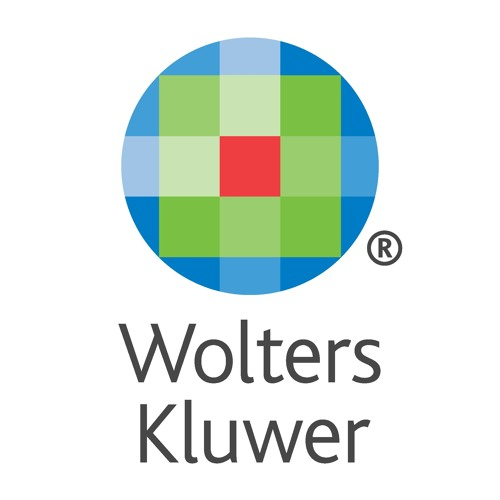

I study Computer Science at NYU. I dredged up an Econ Minor along the way as well. Trying to figure out what Computer Science means and I play around with Java, JS, Python. I use SQL because it is forever.

I worked the Summer of '18 at Wolters Kluwer as a Financial Planning and Analysis Intern. Using CRM, SQL, Excel, I cross-referenced Infinity Spreadsheets and Views to open up revenue opportunities and evaluate unit performance.
Two Summers ago I was the Fund Development Intern at Trinity Wall Street Church. Learned how to Navigate Microsoft CRM and account data. Created Views that Supported a Haitian Charity Fund which raised 5k+!
Plan, book, and execute large-scale and diverse concerts for NYU Students using a 16k budget (2017-2018), 140k budget (2018-2019) I booked JPEGMAFIA, YAEJI, OMAR APOLLO before they were cool. Currently the Vice President.